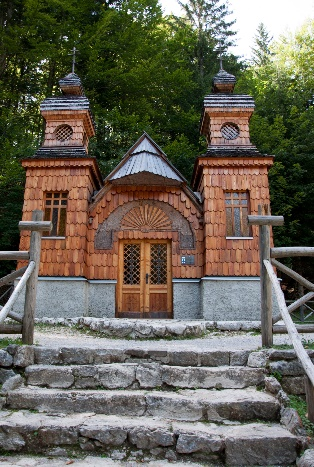
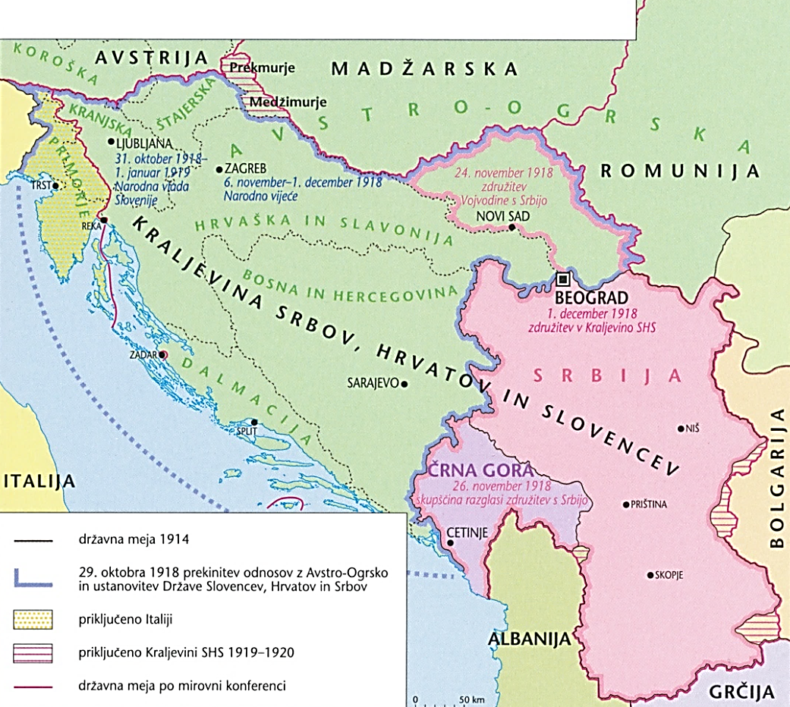
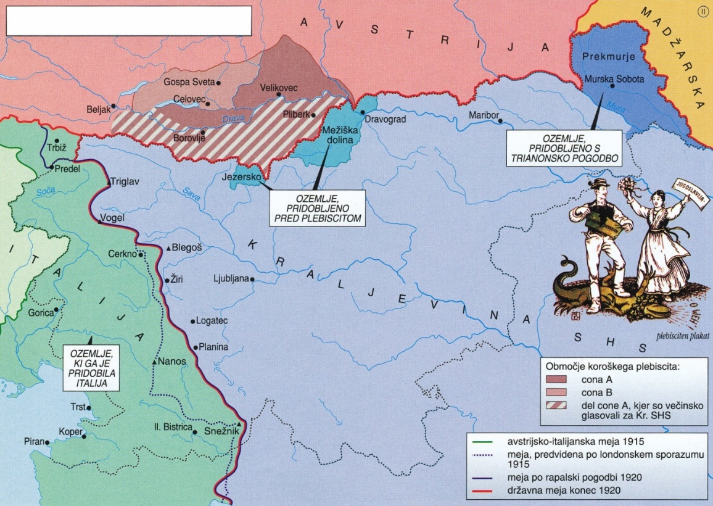
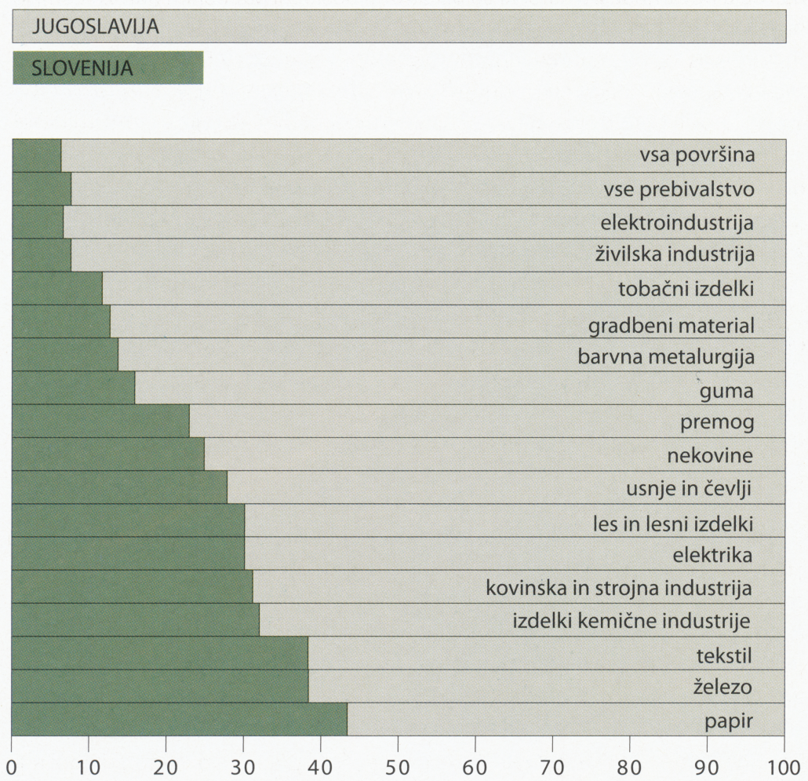
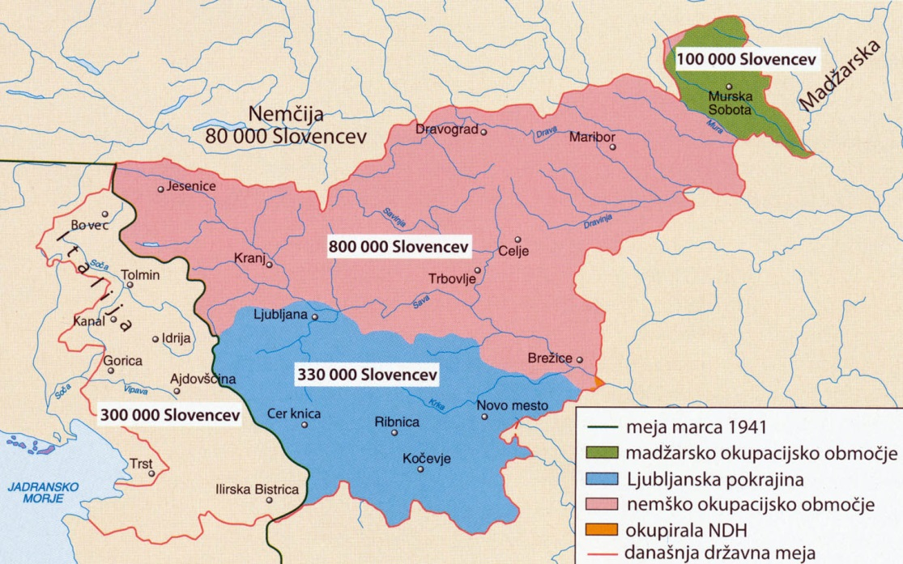
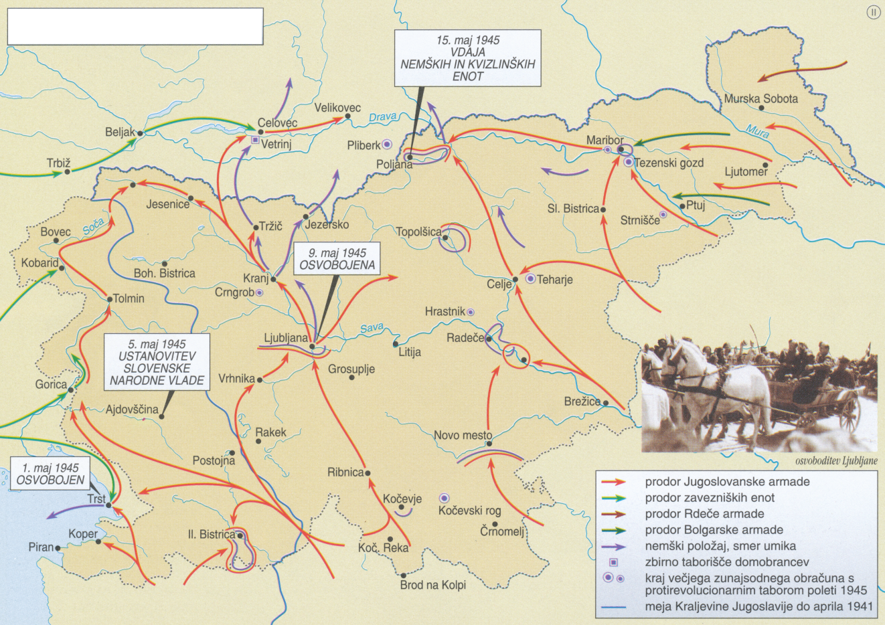
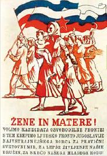
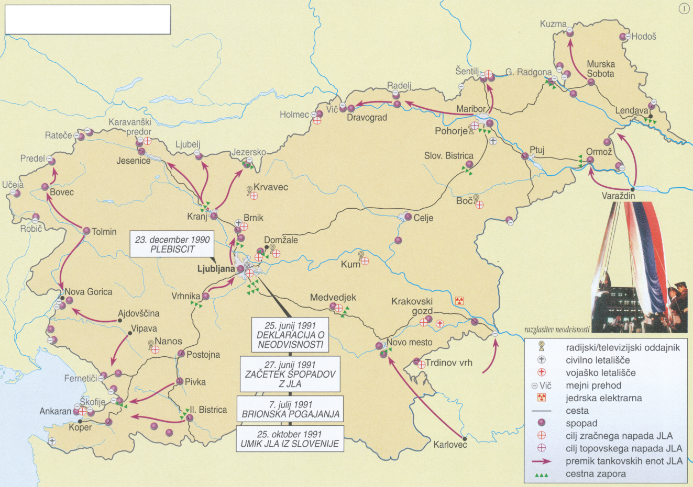
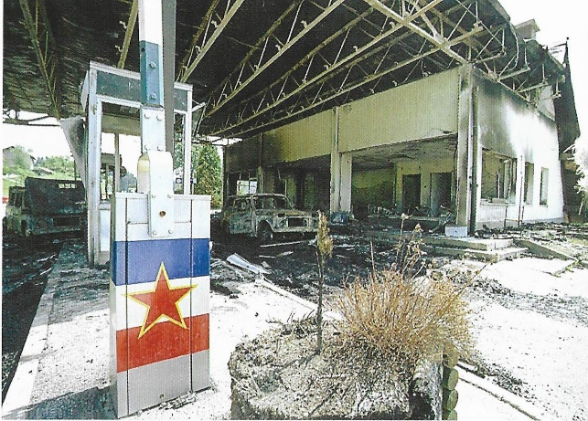

Slovensko nacionalno preoblikovanje
1
V predmarčni dobi je bilo več poskusov izdajanja
slovenskega časopisa.
3 točke
S tem poukom o vsakdanjih potrebah pa so razširile
veselje do branja, s pesmimi, zgodovinskimi in
jezikoslovnimi članki so budile slovensko zavednost in
dramile najširše plasti naroda. /…/ Tako so postale
»Novice« ona prva vez, ki je sklenila kranjske,
štajerske, koroške in primorske Slovence. /…/ Združivši
vse slovenske pisatelje v eno kolo, so »Novice« brez
večjega hrupa zedinile Slovence tudi v enotni pisavi.
Vir: Mal, J., 1993: Zgodovina slovenskega naroda,
str. 363. Mohorjeva družba. Celje
1.1
Kateri je bil prvi slovenski poljudnostrokovni
časopis?
Rešitev
Kmetijske in rokodelske novice
1.2
Opišite namen izhajanja tega časopisa.
Rešitev (ena od)
- Časopis naj bi pomagal pri razvoju kmetijstva / obrti.
- S časopisom so želeli poučevati ljudi o fiziokratskem kmetovanju / obrtnih veščinah.
- Časopis naj bi imel vzgojno vlogo.
- Časopis je bil namenjen širokim krogom bralstva.
1.3
Pojasnite vlogo tega časopisa v narodnem gibanju.
Rešitev (ena od)
- Pomagal je pri utrjevanju narodne identitete.
- Širil je uporabo slovenskega jezika / nove pisave gajice.
- Časopis so brali v vseh deželah (naseljenih s Slovenci), zato je imel povezovalno vlogo.
- Širil je uporabo besed Slovenija in Slovenci in tako označeval slovenski etnični prostor.
- Članki o izvoru Slovencev so pomagali ustvarjati narodno zgodovino.
2
Leta 1848 je slovensko nacionalno gibanje iz kulturnega
preraslo v politično.
3 točke
Ob ustanovitvi društva Slovenija 20. aprila na Dunaju so
njegovi člani sprejeli peticijo, v kateri so jasno
zahtevali združeno Slovenijo, uvedbo slovenskega jezika
v šole in urade ter nasprotovali vključitvi v Nemško
zvezo.
Vir: Slovenska novejša zgodovina, str. 25.
Mladinska knjiga. Ljubljana, 2005
2.1
Navedite ime političnega programa Slovencev leta
1848.
Rešitev
Zedinjena Slovenija
2.2
Kakšen položaj slovenskega jezika je zahteval
program?
Rešitev (ena od)
- Slovenski jezik naj postane uradni jezik.
- Slovenski jezik naj postane učni jezik v šolah.
2.3
Pojasnite, zakaj peticijsko gibanje ni bilo najbolj
uspešno.
Rešitev (ena od)
- Še vedno je prevladovala deželna zavest.
- Program se jim je zdel preveč radikalen.
- Nekateri avtorji programa so želeli združitev s Hrvati in Čehi.
- Kmetje so se v večini zanimali le za odpravo fevdalizma.
- Programu so nasprotovali Nemci na Slovenskem.
3
V času Bachovega absolutizma je narodno gibanje znova
delovalo le na kulturnem področju. Obkrožite tri
pravilne trditve, povezane s tem obdobjem na
Slovenskem.
3 točke
A – Oblasti so prepovedale vsa politična društva
in časopise iz revolucionarnega leta 1848.
B – Na Dunaju je bila ustanovljena Družba
svetega Mohorja, ki je izdajala slovenske
knjige.
C – Slomškovo delovanje je bilo pomembno za
širjenje slovenstva na južnem Štajerskem.
D – Po konkordatu s cerkvijo leta 1855 so nadzor
nad osnovnimi šolami dobile župnije.
E – Ustanovljen je bil ljubljanski licej in s
tem višja šola v Ljubljani.
F – Janez Bleiweis je v tem obdobju izdal
zemljevid slovenskega ozemlja.
Za 3 pravilne 3 t. · za 2 → 2 t. · za 1 → 1 t.
4
Leta 1861 so bile na Slovenskem prve volitve v deželne
zbore.
2 točki
Prve volitve v deželne zbore marca 1861 so bile sicer
zelo žive, toda nikakor še niso imele značaja
pripravljenega in organiziranega boja med političnimi
strankami. Zlasti slovenska stranka na volitve ni bila
pripravljena /…/. Vse je bilo prepuščeno posameznim
zavednim Slovencem /…/. V splošnem sta se pri volitvah
prepletali dve vrsti boja: boj med liberalnimi in
konservativnimi ali klerikalnimi nazori in boj za
pravice slovenščine oziroma proti njim.
Vir: Gestrin, F., Melik, V., 1966: Slovenska
zgodovina: od konca osemnajstega stoletja do 1918,
str. 137. DZS. Ljubljana
4.1
Navedite politični skupini, ki sta nastopili na
deželnozborskih volitvah 1861.
Rešitev (ena od)
- konservativci / klerikalci / katoliški in liberalci
- narodnjaki in ustavoverci
- narodna stranka in nemški liberalci / ustavoverna stranka
4.2
Pojasnite razloge za volilni neuspeh Slovencev na
teh volitvah.
Rešitev (dve od)
- Slovenci na volitve niso bili pripravljeni.
- Volilni okraji so bili začrtani tako, da so prevladovali nemški kandidati.
- Značilen je bil kurialni volilni sistem.
- Med Slovenci je manjkalo ustreznih kandidatov.
- Slovenci so imeli neizdelan politični program.
- Politična propaganda je bila neizdelana.
- Volitve so bile prepuščene posameznim zavednim Slovencem.
5
V ustavni dobi je središče narodnega delovanja postala
Ljubljana, k čemur so pripomogla na novo ustanovljena
društva. Imenujte prvo slovensko knjižno založbo.
1 točka
Takrat se je uveljavila založniška politika, /…/ da naj
/…/ ne bo niti akademija znanosti niti založba šolskih
knjig, temveč ustanova, ki z izdajanjem znanstvene in
leposlovne literature zadovoljuje kulturne potrebe
širokega občinstva na višji ravni.
Vir: Slovenska kronika XIX. stoletja. 1861–1883,
str. 67. Nova revija. Ljubljana, 2003
Rešitev (ena od)
- Slovenska matica
- Družba sv. Mohorja / Mohorjeva družba
6
Središče slovenskega kulturnega življenja so po letu
1861 postale čitalnice.
2 točki
To so bile prireditve, ki so imele na programu igre,
recitacije, petje, koncertne nastope, predavanja … in so
se navadno končale s plesom. Na ta način so postale
čitalnice zbirališče slovenskih izobražencev in
meščanstva ter nepogrešljivo prizorišče narodne prebuje,
prostor, kjer se je meščanstvo privadilo slovenski
besedi /…/, torej povsod tam, kjer je do takrat /…/
nesporno kraljevala nemščina.
Vir: Slovenska kronika XIX. stoletja. 1861–1883,
str. 25. Nova revija. Ljubljana, 2003
6.1
Katera družbena skupina je prevladovala v
čitalnicah?
Rešitev (ena od)
- meščanstvo
- izobraženci
6.2
Pojasnite pomen čitalniškega delovanja.
Rešitev (dve od)
- V čitalnicah se je krepila slovenska narodna zavest.
- Slovenščina se je uveljavila kot pogovorni jezik (poleg nemščine).
- Čitalnice so bile središče narodnega prebujenja.
- V čitalnicah so se razvijale slovenske kulturne dejavnosti.
7
Slovenske dežele so se v 19. stoletju začele hitreje
gospodarsko razvijati. Pri reševanju si pomagajte s
sliko 4 v barvni prilogi.
3 točke

Navdušenje nad železnico pa je bilo tako nesporno in
enoglasno le na površini. Posamezniki /…/ so se namreč
prav dobro zavedali, da bo imela izgradnja železniške
mreže globoke in celo nepredvidljive socialne in
gospodarske posledice.
Vir: Slovenska kronika XIX. stoletja. 1800–1860,
str. 383. Nova revija. Ljubljana, 2005
7.1
Katero dejavnost je pospešila gradnja železnice v
Posavju?
Rešitev
premogovništvo / izkop premoga
7.2
Naštejte tri pozitivne posledice prihoda železnice v
slovenske dežele.
Rešitev (tri od)
- razvoj železarstva
- razvoj premogovništva
- hitra industrializacija krajev ob železnici
- širjenje trgovine
- hitrejši pretok blaga
- hitrejši pretok ljudi
- nova delovna mesta
- razvoj mest in krajev ob železnici
- povezanost s svetom
7.3
Pojasnite, zakaj je imela železnica za kmete
negativne gospodarske posledice.
Rešitev (ena od)
- Železnica je uničila stare oblike prevozništva (furmanstvo / brodarstvo / splavarstvo).
- Kmetje so izgubili dodaten vir zaslužka, ustvarjen s prevozništvom.
- Tuji pridelki so bili velika konkurenca domačim.
- Uvoz cenejših kmetijskih pridelkov je povzročil padec cen domačega žita.
- Kmetje so kupovali cenejše industrijske izdelke, kar je povzročilo propad domače obrti.
8
V drugi polovici 19. stoletja in na prehodu v 20.
stoletje se je na Slovenskem širila industrializacija.
Pri reševanju si pomagajte s sliko 4 v barvni prilogi.
Povežite kraje z industrijskimi obrati tako, da na črto
v levem stolpcu vpišete ustrezno črko iz desnega
stolpca.
3 točke
| Kraj | Industrijski obrat | Odgovor |
|---|---|---|
| Vevče | B – papirnica | B |
| Ruše | E – kemična industrija | E |
| Tržič | A – tovarna čevljev Petra Kozine | A |
| Prebold | F – bombažna predilnica | F |
| Celje | C – tovarna emajlirane posode | C |
| Dvor pri Žužemberku | D – železarstvo | D |
Za 6 pravilnih 3 t. · za 5–4 → 2 t. · za 3–2 → 1 t.
9
Agrarna kriza je ob koncu 19. stoletja povzročila
izseljevanje iz slovenskih dežel.
2 točki
Preglednica 1: Naravno in dejansko gibanje
prebivalstva v obdobju 1870–1910
Vir: Cvirn, J., Studen, A., 2010: Zgodovina 3, str.
157. DZS. Ljubljana
| Dežela | Naravni prirastek (abs.) | Dejanski prirastek (abs.) | Migracijski saldo (abs.) |
|---|---|---|---|
| Sp. Štajerska | +147.427 | +52.080 | −95.347 |
| Južna Koroška | +52.566 | +36.512 | −16.054 |
| Kranjska | +169.237 | +44.746 | −124.491 |
| Goriška | +94.068 | +42.309 | −51.759 |
| Istra* | +53.623 | +44.451 | −9.172 |
9.1
Iz katerih dveh slovenskih dežel se je izselilo
največ prebivalstva?
Rešitev (dve od)
- Kranjska
- Štajerska
- Goriška
9.2
Pojasnite, kako je agrarna kriza vplivala na
izseljevanje prebivalstva.
Rešitev (dve od)
- Zaradi zadolženosti so kmetje izgubili kmetije / posestva.
- Premajhne kmetije niso mogle preživeti vsega prebivalstva.
- Prevladovala je razdrobljena posest.
- Majhna produktivnost je prisilila ljudi k izseljevanju.
- Pri kmetih je bilo pomanjkanje kapitala.
- Kmetije so se prepočasi modernizirale.
10
Proti koncu 19. stoletja so na Slovenskem nastajale
različne politične stranke, ki so si prizadevale
pridobiti čim več volivcev. Obkrožite črko pred izbrano
politično stranko (A ali B), nato odgovorite na
podvprašanja.
4 točke
Voditelj KNS Ivan Šusteršič v memurandumu Francu
Ferdinandu:
»Naš državno pravni program je trializem. Zavzemamo se zanj ne le iz narodnih, temveč tudi iz dinastičnih vzrokov; kajti pretežna masa slovenskega ljudstva je cesarju zvesta in stremi za veliko, mogočno monarhijo pod žezlom habsburške dinastije. /…/« Vir: Brodnik, V., in drugi, 2020: Zgodovina 3: dolgo 19. stoletje, str. 178. Mladinska knjiga. Ljubljana
»Naš državno pravni program je trializem. Zavzemamo se zanj ne le iz narodnih, temveč tudi iz dinastičnih vzrokov; kajti pretežna masa slovenskega ljudstva je cesarju zvesta in stremi za veliko, mogočno monarhijo pod žezlom habsburške dinastije. /…/« Vir: Brodnik, V., in drugi, 2020: Zgodovina 3: dolgo 19. stoletje, str. 178. Mladinska knjiga. Ljubljana
Program Narodno napredne stranke za
Kranjsko:
»1. /…/ Končni smoter stranke je, da pribori narodu svobodno nacionalno življenje in kulturno blagostanje /…/, gospodarsko osamosvojitev in socialno pravičnost na podlagi enakopravnosti vseh stanov.
2. Stranka zahteva vsled tega kot temeljni postulat slovenskega naroda narodno avtonomijo, katere končni cilj bodi Zedinjena Slovenija in združitev s Hrvatsko. /…/« Vir: Brodnik, V., in drugi, 2020: Zgodovina 3, str. 179. Mladinska knjiga. Ljubljana
»1. /…/ Končni smoter stranke je, da pribori narodu svobodno nacionalno življenje in kulturno blagostanje /…/, gospodarsko osamosvojitev in socialno pravičnost na podlagi enakopravnosti vseh stanov.
2. Stranka zahteva vsled tega kot temeljni postulat slovenskega naroda narodno avtonomijo, katere končni cilj bodi Zedinjena Slovenija in združitev s Hrvatsko. /…/« Vir: Brodnik, V., in drugi, 2020: Zgodovina 3, str. 179. Mladinska knjiga. Ljubljana
| Kriterij | A – Katoliška narodna stranka | B – Narodno napredna stranka |
|---|---|---|
| 10.1 Letnica nastanka | 1892 | 1894 |
| 10.2 Volilna baza (ena od) |
|
|
| 10.3 Programska izhodišča (dve od) |
|
|
| 10.4 Stališče do jugoslovanskega vprašanja (ena od) |
|
|
Razvoj slovenskega naroda v 20. stoletju
11
Vihar prve svetovne vojne je leto dni po sarajevskem
atentatu zajel tudi slovensko ozemlje.
2 točki
Ko je Italija 2. avgusta 1914 objavila nevtralnost, ni
pozabila omeniti, da bo /…/ zaščitila nacionalne
interese in zahtevala ozemeljske kompenzacije. Po drugi
strani pa je že 5. avgusta prišlo do prvih stikov med
Italijo in antanto, v katerih je Italija okvirno
postavila svojo ceno za vstop v vojno na strani antante.
Vir: Simić, M., 1998: Po sledeh soške fronte, str.
10. Mladinska knjiga. Ljubljana
11.1
Kakšna je bila »cena«, ki jo je Italija postavila za
vstop v vojno na strani antante?
Rešitev
Italija je za vstop v vojno na strani antante
zahtevala veliko ozemlja.
11.2
Pojasnite, zakaj je soška fronta sinonim za eno od
najtežjih vojskovanj v prvi svetovni vojni.
Rešitev (dve od)
- Vojskovanje je potekalo v visokogorju.
- Boji so potekali v težkih podnebnih / vremenskih razmerah.
- V visokogorju so gradili utrdbe in zaklonišča / kaverne.
- Za potrebe oskrbe bojišč so gradili gorske ceste (»mulatjere«) / železnice / žičnice.
- Za potrebe avstro-ogrske vojske je bila zgrajena cesta na Vršič.
- Vojskovanje je zahtevalo velikansko število žrtev.
12
Številni vojaki so bili med vojaškimi spopadi odpeljani
v vojno ujetništvo.
2 točki

Ko pa je izbruhnila vojna, se je začela drzna gradnja
vojaške ceste čez prelaz Mojstrovka; vojaške oblasti so
za delo pripeljale 12 000 ruskih vojnih ujetnikov /…/.
Vir: Slovenska kronika XX. stoletja. 1900–1941,
str. 174. Nova revija. Ljubljana, 2005
12.1
Kakšna je bila vloga vojnih ujetnikov na soški
fronti?
Rešitev (ena od)
- Vojni ujetniki so gradili ceste / železnice za potrebe vojske.
- Vojni (ruski) ujetniki so gradili cesto čez prelaz Vršič / idrijsko železnico.
- Vojne ujetnike so uporabljali kot delovno silo.
- Vojni ujetniki so opravljali kmetijska in obrtna dela.
- Vojni ujetniki so se ukvarjali tudi s slikarstvom / glasbo / gledališčem.
12.2
Kateri spomenik na sliki 1 še danes spominja na
njihovo vlogo v času prve svetovne vojne?
Rešitev (ena od)
- ruska kapelica (na Vršiču)
- kapelica na Vršiču
13
Med vojno so se začela prizadevanja za novo
jugoslovansko državo. Poslanci dunajskega državnega
zbora, povezani v Jugoslovanski klub, so jo predstavili
v Majniški deklaraciji.
2 točki
13.1
Kakšen je bil odziv Slovencev na Majniško
deklaracijo?
Rešitev (ena od)
- Slovenci so izražali podporo (z deklaracijskim gibanjem).
- Sledilo je množično zbiranje podpisov.
- Organizirali so velike ljudske shode / zbore / tabore.
- Podporo majniški deklaraciji so pošiljali tudi vojaki s front.
- Podporo majniški deklaraciji so izrekle vse slovenske politične stranke.
13.2
Pojasnite, zakaj so Slovenci rešitev narodnega
vprašanja v tem času videli v povezavi z
južnoslovanskimi narodi habsburške monarhije.
Rešitev (ena od)
- Slovenci so rešitev v povezovanju videli zaradi pritiska germanizacije / razmerja političnih sil.
- Združeni bi lažje dosegli več narodnih / političnih pravic.
- Na to rešitev je vplivala tudi krepitev jugoslovanske ideje.
14
Država SHS je imela številne probleme, zato so na
podlagi krfske deklaracije ustanovili Kraljevino SHS.
Pri reševanju si pomagajte s sliko 5 v barvni
prilogi.
2 točki

14.1
Navedite natančen datum nastanka Kraljevine SHS.
Rešitev
1. 12. 1918
14.2
Kateri dve državi sta se združili v Kraljevino SHS?
Rešitev (obe)
Država SHS in Kraljevina Srbija (in Črna gora)
15
Na mirovni konferenci v Parizu je bilo odločeno, da bo
v Celovški kotlini izveden plebiscit. Pri reševanju si
pomagajte s sliko 6 v barvni prilogi.
2 točki

Po odprtju demarkacijske črte se je /…/ okrepila
avstrijska propaganda, ki je poudarjala zgodovinsko
navezanost Koroške na Avstrijo, /…/ gospodarsko
odvisnost južne Koroške od centrov v osrednjem delu
dežele /…/.
Vir: Slovenska kronika XX. stoletja. 1900–1941,
str. 248. Nova revija. Ljubljana, 2005
15.1
Razložite, kako je bila na podlagi mirovne
konference razdeljena Celovška kotlina.
Rešitev
Celovška kotlina je bila razdeljena na cono A
(pod jugoslovansko upravo) in cono B (pod
avstrijsko upravo).
15.2
Pojasnite, zakaj so se Slovenci na plebiscitu
odločili za Avstrijo.
Rešitev (ena od)
- Avstrijska propaganda je bila v primerjavi z jugoslovansko boljša.
- Avstrija je bila v političnem in gospodarskem smislu naprednejša od Jugoslavije.
- Jugoslovanska stran se je premalo zavzemala za reševanje koroškega vprašanja.
- Slovenci so bili tradicionalno navezani na avstrijski prostor.
- Avstrija je Slovencem obljubljala manjšinske pravice.
- Bali so se srbskega militarizma / unitarizma.
16
Vstop slovenskih dežel v novo državo je prinesel nove
možnosti za ekonomski razvoj. Pri reševanju si pomagajte
s sliko 7 v barvni prilogi.
2 točki

16.1
Naštejte tri industrijske panoge, v katerih je bil
slovenski delež najvišji.
Rešitev
tekstilna, železarska, papirna
16.2
Razložite, zakaj je nazadovala živilska industrija
na slovenskem ozemlju.
Rešitev
Živilska industrija je nazadovala zaradi hude
konkurence kmetijskih pridelkov / surovin (iz
južnega dela države).
17
Po politični krizi v Kraljevini SHS je kralj Aleksander
Karađorđević razpustil parlament, imenoval novo vlado in
preimenoval državo v Kraljevino Jugoslavijo. Povežite
značilnosti posameznega obdobja države tako, da na črto
v levem stolpcu vpišete ustrezno črko iz desnega
stolpca.
3 točke
| Značilnost | Odgovor |
|---|---|
| uzakonjen narodni unitarizem | B – Kraljevina Jugoslavija |
| oktroirana ustava | B – Kraljevina Jugoslavija |
| banovine | B – Kraljevina Jugoslavija |
| uvedena diktatura kralja | B – Kraljevina Jugoslavija |
| vidovdanska ustava | A – Kraljevina SHS |
| 33 administrativnih enot/oblasti | A – Kraljevina SHS |
Za 6 pravilnih 3 t. · za 5–4 → 2 t. · za 3–2 → 1 t.
18
V letih med obema vojnama smo Slovenci dobili pomembne
institucije. Katero še danes pomembno institucijo smo
dobili Slovenci tik pred začetkom vojne?
1 točka
Naslednje leto se je začela gradnja knjižnice /…/, ki je
bila končana leta 1941 /…/. Stavbo /…/ je leta 1932
projektiral arhitekt Jože Plečnik /…/.
Vir: Slovenska kronika XX. stoletja. 1900–1941,
str. 410. Nova revija. Ljubljana, 2005
Rešitev
Narodna in univerzitetna knjižnica / NUK
19
Po kapitulaciji Kraljevine Jugoslavije leta 1941 so si
nemški, italijanski in madžarski okupator razdelili tudi
slovensko ozemlje. Pri reševanju si pomagajte s sliko 8
v barvni prilogi. Obkrožite črko pred izbranim
okupatorjem (A ali B) in v obliki krajšega razmišljanja
odgovorite na vsa vprašanja.
5 točk

Okupatorji so uvajali vojno gospodarstvo in si
prizadevali, da bi z zasedenih ali priključenih območij
dobili čim več gmotnih dobrin za potrebe svojih
vojskujočih se držav. /…/ nemški okupator si je
prilastil gospodarsko razvitejša in tudi poljedelsko in
vinogradniško najrodovitnejša območja. /…/ Tudi večina
večjih premogovnikov je bila na nemškem zasedbenem
območju. Italijanskega okupatorja, ki ni dobil želenih
trboveljskih revirjev, /…/ je zaradi pomanjkanja lesa in
premoga v Italiji vsaj v začetku lahko tolažilo veliko
gozdno bogastvo /…/.
Vir: Slovenska novejša zgodovina, str. 590–591.
Mladinska knjiga. Ljubljana, 2005
| Kriterij | A – Nemški okupator | B – Italijanski okupator |
|---|---|---|
| Zasedeno ozemlje (ena od) |
|
|
| Izkoriščanje gospodarskega potenciala (ena od) |
|
|
| Odnos do slovenskega jezika (ena od) |
|
|
| Ukrepi proti odporniškemu gibanju (dve od) |
|
|
| Kolaboracija z okupatorjem (ena od) |
|
|
20
Takoj po okupaciji so se pojavile pobude za upor proti
okupatorju, vendar sta imela revolucionarni in meščanski
tabor glede tega različne poglede.
2 točki
Proti okupatorju je treba vršiti neizprosno oboroženo
akcijo.
Vir: Osvobodilna fronta. Leto II, št. 1, str. 1 (v
začetku januarja 1942)
Slovenci na zasedenem ozemlju naj mirno čakajo na
navodila. Na pozive jugoslovanskih oblasti naj vsi
Slovenci takoj store, kar je v njihovi moči, da bo vsako
delo strnjeno in uspešno.
Vir: Jernejčič, R. A., 2000: Zgodovina na maturi,
str. 71. DZS. Ljubljana
20.1
Pojasnite razliko med taboroma v odnosu do
okupatorja.
Rešitev
Revolucionarni tabor je želel začeti oborožen
odpor, medtem ko se je meščanski tabor odločil
za taktiko čakanja / navodila jugoslovanske
vlade.
20.2
Katera politična skupina je prevzela vodilno vlogo v
boju proti okupatorju?
Rešitev (ena od)
- Komunistična partija / komunisti
- Osvobodilna fronta / osvobodilno gibanje
21
Leta 1944 je že bilo mogoče slutiti konec vojne. Glavno
breme pri osvoboditvi so nosile partizanske enote. Pri
reševanju si pomagajte s sliko 9 v barvni prilogi.
Obkrožite črke pred tremi pravilnimi trditvami.
3 točke

A – Partizanske enote so se ob pomoči zaveznikov
preoblikovale v Jugoslovansko armado.
B – Glavna smer umikanja nemških in kvizlinških
enot je bila v smeri Maribor–Šentilj.
C – Trst so osvobodile anglo-ameriške sile.
D – V sklepnih operacijah je bila 5. maja v
Ajdovščini imenovana narodna vlada Slovenije.
E – Ljubljana je bila osvobojena v zadnjih dneh
aprila 1945.
F – Nemške enote so se vdale pri Topolščici, po
koncu vojne v Evropi.
Za 3 pravilne 3 t. · za 2 → 2 t. · za 1 → 1 t.
22
Takoj po drugi svetovni vojni se je v Sloveniji
zamenjala oblast. Pojasnite, kako so potekale prve
povojne svobodne volitve.
1 točka

Rešitev (ena od)
- Opozicija na volitvah ni sodelovala.
- Lista, ki je sodelovala na volitvah, se je imenovala Ljudska fronta.
- Na voljo sta bili le dve skrinjici.
- Črne skrinjice so bile nameščene za volivce, ki se niso strinjali z edino stranko na volitvah.
- Na teh volitvah so lahko volile ženske.
- Zaradi velike nepismenosti so volili s kroglicami.
- Na volitvah so se dogajale nepravilnosti.
23
Povojna Jugoslavija je imela od leta 1945 v imenu
oznako »federativna«, a je bila prva povojna leta zelo
centralizirana.
2 točki
Minister zvezne vlade Edvard Kocbek je 27. februarja
1946 v svoj dnevnik zapisal: »Tomaž Furlan je poslal
najprej slovenski akt, ki so ga vrnili s pripombo:
Službeni jezik srpski.«
Vir: Gabrič, A., Režek, M., 2011: Zgodovina 4, str.
196. DZS. Ljubljana
23.1
Zakaj je Slovenijo motila centralizirana gospodarska
politika?
Rešitev (ena od)
- Slovenija je kot najbolj razvita republika plačevala največji delež v zvezni proračun, iz njega pa je dobila (relativno) najmanj.
- Ker je zaviral razvoj najbolj razvitih delov države.
23.2
Pojasnite, kakšen položaj je imel slovenski jezik v
tem času.
Rešitev (ena od)
- Slovenščina je postala uradni državni jezik.
- Slovenščina se je lahko uporabljala v državnih ustanovah.
- Slovenščina je bila izrinjena iz vojaškega izrazoslovja / nekaterih osrednjih državnih uradov / ustanov.
- V Sloveniji so bili plakati / napisi v srbohrvaščini.
- Srbohrvaščino so uporabljali na filmskih plakatih / v podnapisih v kinu / reklamah / prospektih.
24
Zaradi vedno večjih nesoglasij in nezmožnosti doseči v
Jugoslaviji kakršenkoli dogovor, si je Demos za cilj
zastavil osamosvojitev Slovenije. Pri reševanju si
pomagajte s sliko 10 v barvni prilogi.
2 točki


Slika 3: Objekt mejnega prehoda na Holmcu po
spopadih med slovenskimi obrambnimi silami in JLA,
28. 6. 1991
24.1
S katerim dogodkom so se Slovenci leta 1990 odločili
za izstop iz Jugoslavije?
Rešitev
plebiscit
24.2
Pojasnite, kako je poskušala Jugoslavija preprečiti
osamosvojitev Slovenije.
Rešitev (ena od)
- Sledila je 10-dnevna vojna.
- Jugoslavija je osamosvojitev poskušala preprečiti z oboroženim napadom.
25
Naštetim dogodkom dodajte ustrezno letnico: 1917, 1921,
1934, 1941, 1948, 1961.
3 točke
Rešitev
| 1961 | prvo srečanje gibanja neuvrščenih v Beogradu |
| 1917 | »čudež pri Kobaridu« |
| 1948 | spor Jugoslavije z informbirojem |
| 1921 | sprejetje vidovdanske ustave |
| 1941 | ustanovitev Osvobodilne fronte slovenskega naroda (OF) |
| 1934 | atentat na kralja Aleksandra Karađorđevića v Marseillu |
Za 6 pravilnih 3 t. · za 5–4 → 2 t. · za 3–2 → 1 t.